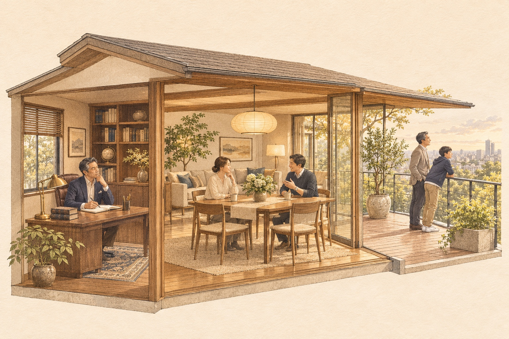

ファミリーオフィスとは何か
商品を選ぶ前に、人生全体の判断軸をつくる。
事業、資産、家族。それぞれの計画を、これからの人生と照らして考える。
築いてきたものを、
これからの人生につなぐ。
事業を育て、資産を築いてきた。その一方で、これからの働き方や家族との時間について、考えることが増えてきた。事業への再投資、個人資産の持ち方、子どもの進学。別々の相談先から話を聞いても、どれを先に決めるかは、自分で考える必要があります。
ファミリーオフィスは、本人や家族を中心に、資産をはじめとする複数のテーマを横断して考えるための仕組みです。その形や役割は一様ではありません。K2が重視しているのは、事業・資産・家族の希望をつなぐ「人生と資本の全体設計」です。
いくら資産があれば考えるべきか、という問いの前に、いま抱えている判断を並べてみる。何を望み、何が決まっていて、何を確かめたいのか。まずは、身近な予定から見ていきます。
事業や資産が育った先に、考えたいこと
事業や資産の計画を考えるとき、数字と一緒に確かめたいことがあります。これからも続けたい仕事、家族と過ごしたい時間、暮らしたい場所。本人と家族の希望が、選び方の手がかりになります。
これから、どこで、誰と、どう生きたいか
働き方・住む場所・家族との時間
経営の第一線に立ち続けたい。仕事を任せる時間を少しずつ増やしたい。子どもの成長を近くで見たい。希望は、人によって異なります。今の仕事や暮らしを、そのまま大切に続けたいという考えも、全体設計の出発点です。
本人が思う将来と、家族が望む暮らしが、初めから一致しているとは限りません。本人は仕事の拠点を増やしたくても、家族は住み慣れた場所を離れたくないかもしれません。住む場所、働く時間、家族の予定を言葉にすると、まだ話し合えていなかったことが見えてきます。
「いつか海外で暮らしたい」という希望も、子どもの進学時期に合わせたいのか、仕事を任せた後を考えているのかで、話し合う内容は変わります。金額に置き換える前に、どんな場面を思い浮かべているかを共有してみます。
ここで一つの答えにまとめる必要はありません。決まっていることも、まだ迷っていることも、今の考えとして残しておきます。

どう働くか
続けたい役割、任せたい仕事
どこで暮らすか
今の住まい、これからの拠点
誰と過ごすか
家族と分かち合いたい時間
事業と資産を、その希望にどうつなげるか
事業を育てながら、資本の活かし方も考える
経営者として事業の成長を考えながら、築いた資本を何に使うかにも目を向ける。そのとき、投資家・資本家としての視点が重なります。どちらかの役割を終えてから次へ進む、と決めるものではありません。
資本には、将来に向けて「育てる」、必要なときのために「備える」、望む暮らしに「使う」という役割があります。使う目的と必要になる時期が分かれば、運用方法や保有する資産を考える際にも、確かめたい条件が具体的になります。
必要になる時期が近いお金と、長い時間をかけて育てたいお金では、確認したい条件も違います。同じ資産額であっても、目的や家族の予定が変われば、選択の前提は変わります。
例えば、事業への再投資と子どもの海外進学を同時に検討する経営者を考えてみます。これは理解のための架空例です。会社の再投資資金と、家族の教育・生活に使う個人資金は別に扱います。そのうえで、準備の時期や本人の働き方がどう関わるかを、一緒に見ていきます。
育てる
これからの事業や将来のために
備える
必要になる時期を確かめて
使う
本人と家族が望む暮らしに
法人資金と個人資金は区別して整理します。配分割合を示す図ではありません。
仕事、資産、教育、暮らす場所。それぞれの関係から、確かめることが見えてきます。
ファミリーオフィスが見渡す範囲
教育、居住地、事業、資産。一つひとつに詳しい相談先があっても、それぞれの提案が同じ目的や時期を前提にしているとは限りません。本人と家族の側から、判断のつながりを確かめます。
本人と家族を中心に、複数の分野をつなぐ
事業・資産・家族・教育・海外のつながり
先ほどの架空例で、子どもの進学先を検討するとします。学ぶ内容や本人の希望を考えるうちに、家族はどこで暮らすのか、親は今の働き方を続けられるのか、といった確認事項が出てきます。進学費用の比較だけでは決まらないことがあるのです。
事業への再投資にも、資金だけでなく、経営者自身が関わる時間や体制の準備が必要になるかもしれません。教育と事業は別の話に見えても、同じ時期の予定として並べると、双方に関わる条件が見つかります。
相談先へ伝える前提も大切です。教育については家族の希望、事業については本人が関わる期間を伝えていたとしても、その二つが結びついていなければ、予定の重なりは見えにくいままです。全体を並べることは、専門家に何を確認するかを考える準備にもなります。
これは海外進学に限った話ではありません。国内での進学や転居でも、暮らしと仕事の予定はつながっています。ファミリーオフィスの視点は、こうした関係から、判断や相談の順番を考えることにあります。各分野の専門的な確認や実務は、それぞれの専門家の役割です。
家族の希望
事業
役割・体制・再投資
資産
目的・必要な時期
教育
進路・準備の予定
暮らす場所
住まい・家族の時間
分野どうしの関係を表す図です。資金の移動や、全分野の実務代行を示すものではありません。
K2が重視する「人生と資本の全体設計」
現在地・優先順位・選択肢・順序を整理する
K2が重視するのは、いま持っている事業や資産と、これから望む人生を一緒に確かめることです。商品を選ぶ前に、何を実現したいのか、そのために何を先に考えるのか。選択の理由となる判断軸を整理します。
現在地には、資産の内訳だけでなく、事業で担っている役割、家族の希望、決まっている予定も含まれます。そのうえで、大切にしたいことの優先順位、考えられる選択肢、先に確かめることと後で決めることを見ていきます。
選択肢を並べる際には、利点だけでなく、必要な準備や家族への影響も見ます。すぐに動く、段階を踏む、今の状態を続ける。それぞれの理由を確かめると、まだ条件の揃っていない判断を急がずに済みます。
例えば「仕事への関わり方を変えたい」という希望でも、いつから、どの役割を任せたいかによって準備は変わります。考えた理由と未確定の条件が残っていれば、状況が変わったときにも立ち戻れます。詳しい整理の順序はガイド02で、専門家との関係やK2の役割はガイド03で見ていきます。
何を選んだかだけでなく、その理由と、見直す条件を残します。
全体設計を考え始めるタイミング
引退や相続が目前になったときだけが、考え始める時期ではありません。事業を育てている途中でも、仕事と家族の予定が重なれば、同時に考えたいことが増えてきます。
資産を築いている途中にも、判断は複雑になる
再投資と子どもの進学を、同じ時間軸で見る
再投資と進学の架空例では、事業の検討と家族の準備が同じ時期に重なっています。事業の計画を先に固めてから家族の予定を聞くと、必要な時間や準備を後から調整することになるかもしれません。
家族の暮らしを先に決める場合も、その時期に経営者本人がどれだけ事業へ関わる必要があるかは確かめたい点です。どちらか一方を優先する前に、それぞれの選択に必要な条件を見ておきます。
重なりが分かっても、すぐに予定を変えるとは限りません。任せられる仕事を増やすにはどれくらい準備が必要か、進路を決めるまでに何を調べたいか。先に分かることを増やしておくと、後で判断する際の材料になります。
事業、個人資産、家族の予定を別々の段に置き、時期を揃えて眺めてみる。資金を一つにまとめずとも、いつまでに何を確認するかは整理できます。会社の判断と個人の判断を分けたまま、互いに影響する時期を共有することが要点です。
再投資と海外進学を考える、架空の経営者の例
| 分野 | いま考えていること | 準備が重なる時期 | その先に向けて |
|---|---|---|---|
| 事業 | 再投資を検討 | 必要な体制・時期を確認 | 事業の計画を見直す |
| 個人資産 | 教育・生活の希望を整理 | 必要な時期と準備を確認 | 家族の予定に照らす |
| 家族 | 本人の進路の希望を聞く | 進学先・住まいを検討 | 暮らし方を話し合う |
01いま考えていること
- 事業
- 再投資を検討
- 個人資産
- 教育・生活の希望を整理
- 家族
- 本人の進路の希望を聞く
02準備が重なる時期
- 事業
- 必要な体制・時期を確認
- 個人資産
- 必要な時期と準備を確認
- 家族
- 進学先・住まいを検討
03その先に向けて
- 事業
- 事業の計画を見直す
- 個人資産
- 家族の予定に照らす
- 家族
- 暮らし方を話し合う
検討時期の重なりを示す説明例です。法人と個人の資金を移す手順ではありません。
全体が見えると、次に確かめることが分かる
今決めること・保留すること・見直す条件
予定を並べても、すべての答えがその場で出るわけではありません。条件が揃っていて今判断できることと、まだ情報を確かめたいことを分けておきます。
たとえば住む場所の候補がまだ決まっていないなら、「家族で候補を話した後に必要な準備を考える」と残しておくことができます。単に先送りするのではなく、次に確かめる内容をはっきりさせておく考え方です。
保留するときは、何が分かれば考え直せるかも残します。進路の希望が固まる、事業の体制が変わるなど、見直す条件が分かっていれば、判断を再開する手がかりになります。今は行わないことにも理由を持つ。その理由を短く書き留めることが、次の判断につながります。
今決めること
判断に必要な条件が揃っている
保留すること
まだ確かめたいことがある
見直す条件
この前提が変わったら考え直す
順番に進める手順ではなく、判断の状態を分けたものです。
事業と家族の予定を、同じ時間軸から眺めるところから始めます。
いま考えていることを、並べてみる
仕事で考えていることを一つ、家族と話していることを一つ、思い浮かべてみてください。必要な時期や、自分が担う役割は重なっていないでしょうか。
事業・資産・家族の計画は、同じ方向を向いているか
個別の計画を並べて見えてくること
再投資と進学の例のように、別々に見える予定も、時期や本人の役割を通してつながっています。自分の場合は何が重なるのか。家族とまだ話していない希望はないか。まずは、いま考えていることを並べてみます。
書き出すときは、「何のために」「いつ頃を考えているか」「誰と確認したいか」の三つを添えると、話を始めやすくなります。答えが空欄でも構いません。まだ分からないことも、これから考えるための材料です。
全体設計は、将来を一つの結論に固定するためのものではありません。現在地を確かめ、大切にしたいことを共有し、選べる道と次に確かめることを見えるようにする。その入口として、次のガイドでは、計画が分かれてしまう理由と整理の順序を考えます。